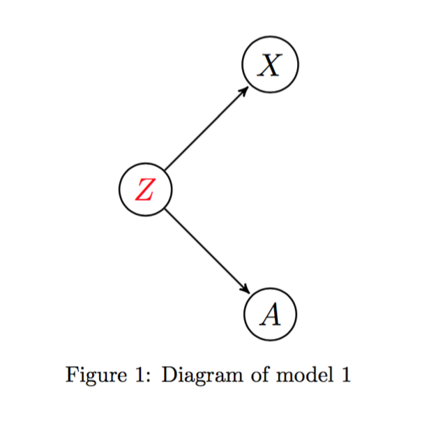
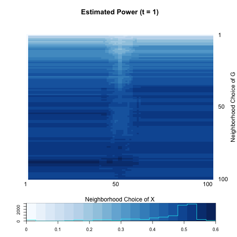
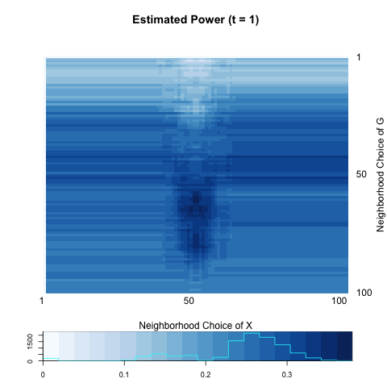
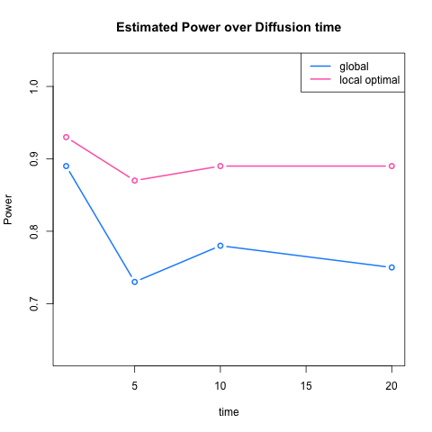

class: center, middle # [Testing Local Dependence over Network](https://github.com/neurodata/youjin): ## via Local Distance Correlation <br/> Youjin Lee , Department of Biostatistics <!-- #### e: [jovo@jhu.edu](mailto:jovo@jhu.edu) | w: --> <!-- ### [NeuroData.io](http://neurodata.io) --> --- layout: true .bbar[ _[Motivation](#Motivation)_ | [Local Dependence](#Local Dependence) | [Distance Correlation](#Distance Correlation) | [Diffusion Distance](#Diffusion Distance) | [Simulation](#Simulation) | [Implication](#Implication)] --- ## Motivation <br/> - Interests in Network structure and its node attributes - Science : linkage for functional purpose, attributes passing through linkage, etc. - Social Network : peer effects, homophily, etc. <br /> .center[ <img src="http://bitspace.no/wp-content/uploads/2014/12/brain-network.jpg" alt="Drawing" style="width: 300px;"/> <img src="http://blogs-images.forbes.com/datafreaks/files/2015/01/photodune-5787803-social-network-l-1940x1455.jpg" alt="Drawing" style="width: 300px;"/>] --- ## Motivation <br/> - Connection to Previous Work - Out of concern about lots of epidemiology studies. e.g.) obesity and social networks. - Abuse of standard statistical analysis without confirming independent sample assumptions. - Comparions between adjacent pairs vs. non-adjacent pairs. - Assumptions - Robustness of using adjacent relationships - Testing global dependency - Limitations - Needs to differentiate between nodes having different number of friends. (unique connection vs. one of many connections) - Fail to achieve high power under .color{red}{local dependence}. --- ## Goal <br/> .g[G] : Graph / Network structure represented by edge variable .g[A]. .y[X] : Real-valued node attribute variable. - We want to test: $$H\_{0} : f\_{G \cdot X} = f\_{G} \cdot f\_{X}$$ $$H\_{A} : f\_{G \cdot X} \neq f\_{G} \cdot f\_{X}$$ - Possible properties of .g[G]: - cannot guarantee global dependence. - adjacent relationship does not say everything. - Possible properties of .y[X]: - may be interested in multivariate attributes. --- layout: true .bbar[ [Motivation](#Motivation) | _[Local Dependence](#Local Dependence)_ | [Distance Correlation](#Distance Correlation) | [Diffusion Distance](#Diffusion Distance) | [Simulation](#Simulation) | [Implication](#Implication)] --- name: Local Dependence ## Local Dependence <br/> - Only nodes close enough are dependent. - M-dependence - Latent Structure : Block model - Different dependence pattern across clusters or blocks. - e.g) distribution of a signal X is associated to neuronal connectivity G in some parts of brain, but they are randomly distributed over neuronal network in other parts. --- ## Local Dependence Graph from simulation data (`kamada.kawai` in `R`) - Three types of node attribute outcomes (in ordinal scale) - Cannot tell any dependence easily. .center[ ] --- ## Local Dependence Graph from simulation data (`kamada.kawai` in `R`) - Three types of node attribute outcomes (in ordinal scale) - .y[X] = 1 .center[ <img src="images/outcome1_three2.png" style="width: 400px;"/>] --- ## Local Dependence Graph from simulation data (`kamada.kawai` in `R`) - Three types of node attribute outcomes (in ordinal scale) - .y[X] = 2 .center[ ] --- ## Local Dependence Graph from simulation data (`kamada.kawai` in `R`) - Three types of node attribute outcomes (in ordinal scale) - .y[X] = 3 .center[ <img src="images/outcome3_three2.png" style="width: 400px;"/>] --- ## Local Dependence Graph from simulation data (`kamada.kawai` in `R`) - Three types of node attribute outcomes (in ordinal scale) - Different shapes indicate different latent group .blue[Z] - Distribution of .y[X] depends on latent group .blue[Z] - Distribution of .g[G] depends on latent group .blue[Z] .center[ <img src="images/all_three2.png" style="width: 300px;"/>] --- ## Local Dependence Graph from simulation data (`kamada.kawai` in `R`) - In global test, it is relatively insensitive to detect the local dependence. - .y[X] = 1 .center[ <img src="images/voutcome1_three2.png" style="width: 400px;"/>] --- ## Local Dependence Graph from simulation data (`kamada.kawai` in `R`) - Three types of node attribute outcomes (in ordinal scale) - .y[X] = 2 .center[ <img src="images/voutcome1_three2.png" style="width: 400px;"/>] --- ## Local Dependence Graph from simulation data (`kamada.kawai` in `R`) - Three types of node attribute outcomes (in ordinal scale) - .y[X] = 3 .center[ ] --- name: Local Dependence ## Local Dependence .g[A] : Edge indicator .y[X] : Node attribute .blue[Z : Latent Variable] - Model : - [Model 1] : P(A | .blue[Z]) P(X | .blue[Z]) P(.blue[Z]) - [Model 2] : P(A | .blue[Z]) P(.blue[Z] | X) P(X) - Assumption : .g[A] $\perp$ .y[X] | .blue[Z] - Causal Diagram .center[  ] --- layout: true .bbar[ [Motivation](#Motivation) | [Local Dependence](#Local Dependence) | _[Distance Correlation](#Distance Correlation)_ | [Diffusion Distance](#Diffusion Distance) | [Simulation](#Simulation) | [Implication](#Implication)] --- ## Distance Correlation (Szekely, 2005) <br/> - A measure of all types of dependence between two random vectors, not necessarily equal dimension. - Pairwise Euclidean distance in .g[G] and .y[X]: - $C\_{ij} = \parallel \mbox{ node } i - \mbox{ node } j \parallel$ - $D\_{ij} = \parallel X\_{i} - X\_{j} \parallel$ - Doubly centered distance matrix for .g[G] and .y[X] - $C^{H}\_{ij} = c\_{ij} - \bar{c}\_{i \cdot} - \bar{c}\_{\cdot j} + \bar{c}_{\cdot \cdot}$ - $D^{H}\_{ij} = d\_{ij} - \bar{d}\_{i \cdot} - \bar{d}\_{\cdot j} + \bar{d}\_{\cdot \cdot}$ - Sample distance covariance $$dCov^2\_{n}(G, X) : = \frac{1}{n^2} \sum\limits\_{j,k=1}^{n} C\_{jk} D\_{jk}$$ --- ## Local Distance Correlation (Cencheng, 2016 ) - Combines the ideas of distance correlation with nearest-neighbors of each node. - Neighborhood choice is very related to a latent membership choice, e.g. testing within certain .blue[Z]. - Sample distance correlation for all possible combinations of (k,l): $$dCov\_{kl}(G,l) = \frac{1}{n^2} \sum\limits\_{i,j=1}^{n} C^{H}\_{ij} D^{H}\_{ij} I(r(C\_{ij}) < \color{red}{k} ) I(r(D\_{ij}) < \color{red}{l} )$$ - Construction of $\color{yellow}{D\_{ij}}$ = $|| X\_{i} - X\_{j}||$ is straightforward. How about distance matrix .g[C] = $\parallel \mbox{ node } i - \mbox{ node } j \parallel$? How can we derive distance matrix of .g[G] corresponding to Euclidean distance of .y[X] ? --- layout: true .bbar[ [Motivation](#Motivation) | [Local Dependence](#Local Dependence) | [Distance Correlation](#Distance Correlation) | _[Diffusion Distance](#Diffusion Distance)_ | [Simulation](#Simulation) | [Implication](#Implication)] --- ## Diffusion Distance <br/> - Transition probability from node i to node j: $$P[i,j] = Pr\big( X\_{n} = j \big| X\_{n-1} = i \big)$$ - We define it considering total number of edges from i: $$P[i,j] = \frac{\mbox{ Number of edges between i and j }}{\mbox{ Degree of node i } }$$ - Stationary probability π(j) - No matter what the starting state was, the proportion of time the chain (signal) spends in node j. - Inversely proportional to the likelihood that signal does not move and stay at node j. - .r[Concept] : On the journey to all other possible nodes from node i and node j, respectively, what is the chance that we stay between i and j? The bigger the chance, the smaller the distance is. --- ## Diffusion Distance <br/> - Consider all interal nodes .purple[w] in .g[G] and calculate the probability node i and node j passes .purple[w]. - The higher π(.purple[w]) is, the harder a signal escapes from state .purple[w]. - .r[Diffusion distance] between i and j at time t: $$C^{2}\_{t}[i,j] = \sum\limits_{w \in V(G)} \big( P^{t}[i,w] - P^{t}[j,w] \big)^{2} \frac{1}{\pi(w)}$$ - If t = 1, diffusion distance is very similar to Euclidean distance based on adjacency matrix, but the latter one regards every adjacent relationship as equivalent. - As diffusion time t increases, distance matrix .g[C] is more likely to take into account distance of two nodes far away from in terms of geodesic distance. --- layout: true .bbar[ [Motivation](#Motivation) | [Local Dependence](#Local Dependence) | [Distance Correlation](#Distance Correlation) | [Diffusion Distance](#Diffusion Distance) | _[Simulation](#Simulation)_ | [Implication](#Implication)] --- ## Simulation <br/> - Test : H0 : f(.g[G]⋅ .y[X]) = f(.g[G]) f(.y[X]) or f(.g[A] ⋅ .y[X]) = f(.g[A]) f(.y[X]) - Model : P(A | .blue[Z]) P(X | .blue[Z]) P(X) - Test statistic : Local Distance Correlation - Distance metric of .g[G]: Diffusion Distance t= 1, 5, 10, 20 - Distance metric of .y[X]: Euclidean Distance - Procedures: - Generate iid .y[X] : Bernoulli or Multinomial - Generate latent block variable .blue[Z] conditional on .y[X]. - Generate network .g[G] through an edge variable .g[A], conditional on .blue[Z]. --- ## Two Block Simulation 1 - .y[X] $\sim$ Bern(0.5) - .blue[Z] $\sim$ $\left\\{ \\begin{array}{cc} Bern(0.6) & X = 0 \\\\ Bern(0.4) & X = 1 \\end{array} \right.$ - .g[A] $\sim$ Bern $\left\[ \\begin{array}{cc} \color{red}{0.5} & 0.1 \\\\ 0.1 &\color{red}{0.5} \\end{array} \right]$ .center[  ] --- ## Two Block Simulation 1 - local optimal and global scale is very similar. - Optimality is mostly dependent on neighborhood choice over network .g[G], and $k^{*} \approx 50.$ - May indicate that testing wihtin one block for each .blue[Z] is not different or even better than testing using all individuals (nodes). .center[ <img src="images/two2_plot.png" style="width: 300px;"/>] --- ## Two Block Simulation 2 - .y[X] $\sim$ Bern(0.5) - .blue[Z] $\sim$ $\left\\{ \\begin{array}{cc} Bern(0.6) & X = 0 \\\\ Bern(0.4) & X = 1 \\end{array} \right.$ - .g[A] $\sim$ Bern $\left\[ \\begin{array}{cc} \color{red}{0.5} & 0.1 \\\\ 0.1 & 0.1 \\end{array} \right]$ .center[ <img src="images/two4_power1.png" style="width: 300px;"/> <img src="images/two4_power20.png" style="width: 300px;"/>] --- ## Two Block Simulation 2 - local optimal and global scale is very similar. - As diffusion distance t increases, optimal power as well as global testing power decreases. - Including second block has no benefits to detecting dependency, and as diffusion proces progresses, we are more likely to take into account them. .center[ <img src="images/two4_plot.png" style="width: 300px;"/> ] --- ## Two Block Simulation 3 - .y[X] $\sim$ Bern(0.5) - .blue[Z] $\sim$ $\left\\{ \\begin{array}{cc} Bern(0.6) & X = 0 \\\\ Bern(0.4) & X = 1 \\end{array} \right.$ - .g[A] $\sim$ Bern $\left\[ \\begin{array}{cc} \color{red}{0.5} & 0.3 \\\\ 0.3 & \color{blue}{0.1} \\end{array} \right]$ .center[  ] --- ## Two Block Simulation 3 - Local optimal is systematically better than global test. - As diffusion distance t increases, optimal power as well as global testing power decreases. - Including second block .r[against] to detecting dependency, and as diffusion proces progresses, we are more likely to take into account them. .center[ <img src="images/two6_plot.png" style="width: 300px;"/>] --- ## Three Block Simulation 1 - .y[X] $\sim$ Multinomial(1/3, 1/3, 1/3) - .blue[Z] $\sim$ $\left\\{ \\begin{array}{cc} Multinorm(\color{red}{0.5}, 0.25, 0.25 ) & X = 1 \\\\ Multinorm(0.25, \color{red}{0.5}, 0.25 ) & X = 2 \\\\ Multinorm(0.25, 0.25, \color{red}{0.5} ) & X = 3 \\end{array} \right.$ - .g[A] $\sim$ Bern $\left\[ \\begin{array}{cc} \color{red}{0.5} & 0.1 & 0.1 \\\\ 0.1 & \color{red}{0.5} & 0.1 \\\\ 0.1 & 0.1 & \color{red}{0.5} \\end{array} \right]$ .center[ <img src="images/three2_power1.png" style="width: 300px;"/> <img src="images/three2_power20.png" style="width: 300px;"/>] --- ## Three Block Simulation 1 - Figures presented before - Local optimal is systematically better than global test. - Optimality mostly depends on the neighborhood choice of .y[X], and upto including 100 nearest neighbors. (size of two blocks) .center[ <img src="images/three2_plot.png" style="width: 300px;"/>] --- ## Three Block Simulation 2 - .y[X] $\sim$ Multinomial(1/3, 1/3, 1/3) - .blue[Z] $\sim$ $\left\\{ \\begin{array}{cc} Multinorm(\color{red}{0.5}, 0.25, 0.25 ) & X = 1 \\\\ Multinorm(0.25, \color{red}{0.5}, 0.25 ) & X = 2 \\\\ Multinorm(0.25, 0.25, \color{red}{0.5} ) & X = 3 \\end{array} \right.$ - .g[A] $\sim$ Bern $\left\[ \\begin{array}{cc} \color{red}{0.5} & 0.1 & 0.1 \\\\ 0.1 & \color{red}{0.5} & 0.1 \\\\ 0.1 & 0.1 & 0.1 \\end{array} \right]$ .center[ <img src="images/three4_power1.png" style="width: 300px;"/> <img src="images/three4_power20.png" style="width: 300px;"/>] --- ## Three Block Simulation 2 - Gap between local optimal and global scale is getting larger. - The intuition behind it is that as diffusion process progresses, we are more likely to include block 3, of which edge distribution is randomly distributed across blocks. - Optimality depends on both neighborhood of .g[G] and .y[X]. .center[ ] --- layout: true .bbar[ [Motivation](#Motivation) | [Local Dependence](#Local Dependence) | [Distance Correlation](#Distance Correlation) | [Diffusion Distance](#Diffusion Distance) | [Simulation](#Simulation) | _[Implication](#Implication)]_ --- ## Implication --- ## Implication <br /> --- ## Limitations <br /> - --- ## Applications <br /> - Use of (local) distance correlation and diffusion distance to test: - Independence between two networks : $H\_{0} : f(G\_{1} \cdot G\_{2}) = f(G\_{1}) f(G\_{2})$ - Independence between Networks and Attributes using multiple samples - e.g) Independence between brain connectivites and personality studied from independent samples. --- name: # References .small[ 1. Székely, G. J., & Rizzo, M. L. (2013). Energy statistics: A class of statistics based on distances. Journal of statistical planning and inference, 143(8), 1249-1272. ] --- # Questions? <!-- ### Funding --> <br /> ---